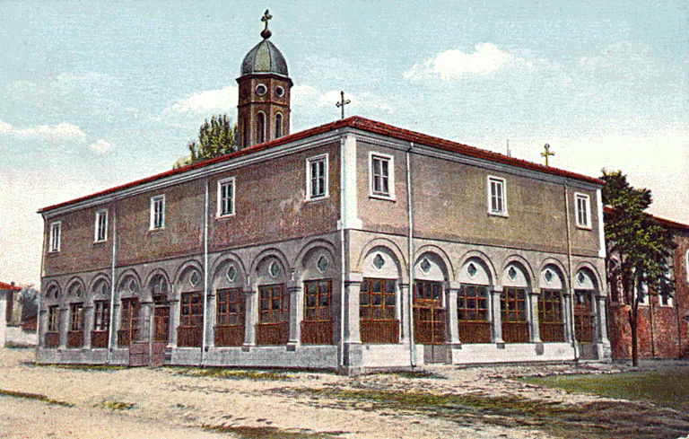

Σβέτι Σπας
- Παραγωγή
- UFUŽ και Documentary Film Prague
- Σενάριο και σκηνοθεσία
- Σλάβκο Γιανέφσκι και EMAN CANERA
- Έτος
- 1959
- Διάρκεια
- 00:31

Η εκκλησία του Αγίου Παντελεήμονα, πάνω από το χωριό Γκόρνο Νέρεζι, νοτιοδυτικά των Σκοπίων. Την έχτισε ο Αλέξιος Κομνηνός, από την οικογένεια των Κομνηνών, το 1164. Ως σήμερα σώζεται η επιγραφή στο μαρμάρινο ανώφλι στην είσοδο από τον νάρθηκα στον κυρίως ναό. Το κτίσμα είναι μονόκλιτο, από πέτρα και τούβλο, με οκταγωνικό κεντρικό τρούλο και τέσσερις μικρούς τετράπλευρους τρούλους στις γωνίες. Η εκκλησία είναι το παλαιότερο βυζαντινό μνημείο όχι μόνο στα Σκόπια αλλά και σε όλη τη Μακεδονία. Αγιογραφήθηκε αμέσως μετά την κατασκευή της. Αργότερα, τον 15ο, 16ο και 19ο αιώνα, αγιογραφήθηκε ξανά, αλλά οι αρχικές τοιχογραφίες την καθιστούν εξέχον μνημείο.


Η Παναγία, χτισμένη το 1835. Βρισκόταν στην αριστερή όχθη του Βαρδάρη. Έχει επιρροές της βυζαντινής αρχιτεκτονικής, με μπαρόκ σύγχρονα αστικά στοιχεία στη διαμόρφωση του χώρου. Κάηκε κατά τον Β΄ Παγκόσμιο Πόλεμο. Ως τότε ήταν ο καθεδρικός ναός της πόλης, και έπειτα καθεδρικός έγινε ο Άγιος Δημήτριος. (Δεκαετία του 1920)

Η εκκλησία της Παναγίας - Δεκαετία του 1920.

Συγκέντρωση του λαού στη γιορτή του Βίντοβνταν, στην αυλή της εκκλησίας της Παναγίας - 1919.

Η εκκλησία του Αγίου Δημητρίου χτίστηκε τον 18ο αιώνα στη θέση της μεσαιωνικής εκκλησίας του Αγίου Δημητρίου. Επισκευάστηκε το 1886-94, οπότε κατασκευάστηκαν ο περίβολος και το καμπαναριό. Έως το 1980 ήταν καθεδρικός ναός. Βρίσκεται στην αριστερή όχθη του Βαρδάρη, κοντά στην Πέτρινη γέφυρα (Δεκαετία του 1920).

Η εκκλησία του Αγίου Δημητρίου - Δεκαετία του 1930.

Η Μητρόπολη των Σκοπίων. Βρισκόταν στην προκυμαία της αριστερής όχθης του Βαρδάρη - Δεκαετία του 1920.

Ο κεντρικός δρόμος κατά τη διαμόρφωσή του (σήμερα η οδός «Μακεντόνιγια», που εκτείνεται από το σημερινό Μουσείο της πόλης των Σκοπίων προς την Πέτρινη γέφυρα). Δεξιά φαίνεται η Καθολική εκκλησία (Οίκος της Αγίας Μάρθας) σε γοτθικό ρυθμό, καθώς και μεμονωμένα κτίρια αριστερά. Χτίστηκε με δωρεά της αυστριακής κυβέρνησης. Το τμήμα του δρόμου κοντά στην Πέτρινη γέφυρα λιθοστρώθηκε το 1911, για να περάσει ο σουλτάνος Μουράτ Ε΄, που ήρθε να επισκεφθεί τα Σκόπια πριν αναχωρήσει για το Κοσσυφοπέδιο.

Η Καθολική εκκλησία σε γοτθικό ρυθμό, χτισμένη στις αρχές του 20ού αιώνα - Δεκαετία του 1920.

Ο κεντρικός δρόμος προς την πλατεία. Στο πρώτο πλάνο η Καθολική εκκλησία. (Δεκαετία του 1950)

Ο κεντρικός δρόμος προς τον σιδηροδρομικό σταθμό (σημερινό Μουσείο της πόλης των Σκοπίων). Στα αριστερά φαίνεται η Καθολική εκκλησία. (Δεκαετία του 1950)

Το καμπαναριό της εκκλησίας Σβέτι Σπας - Δεκαετία του 1910.

Η εκκλησία Σβέτι Σπας βρίσκεται απέναντι από το φρούριο των Σκοπίων - Καλέ. Χτίστηκε στα τέλη του 17ου αιώνα. Είναι μια μικρή εκκλησία, μισοχωμένη στη γη. Ξεχωρίζει για ένα από τα παλαιότερα και ωραιότερα τέμπλα, φτιαγμένο από ξύλο σε βαθιά γλυπτική από τους αδελφούς Φρτσκόφσκι από το Γκάλιτσνικ: τον Πέτρε, ως επικεφαλής, τον Μάρκο και τον Μακάριο. Απεικονίζονται στη δεξιά πλευρά του τέμπλου. Το τέμπλο φιλοτεχνήθηκε την περίοδο 1814-1824. Η φωτογραφία είναι της δεκαετίας του 1920.

Η αυλή της εκκλησίας Σβέτι Σπας. Η φωτογραφία τραβήχτηκε τη δεκαετία του 1930.

Πανόραμα των Σκοπίων. Κάτω στο πρώτο πλάνο η εκκλησία Σβέτι Σπας - Δεκαετία του 1970.

Η εκκλησία του Αγίου Γεωργίου - στη συνοικία «Τσαΐρ» - Δεκαετία του 1930.

Η εκκλησία «Άγιοι Κωνσταντίνος και Ελένη». - Δεκαετία του 1930.

Ο Ναός της Δόξας και το στρατιωτικό νεκροταφείο από τους Βαλκανικούς πολέμους. Καθαγιάστηκε το 1928. (Δεκαετία του 1930)


 Υδραγωγείο4 καρτ-ποστάλ
Υδραγωγείο4 καρτ-ποστάλ Καλέ30 καρτ-ποστάλ
Καλέ30 καρτ-ποστάλ Γέφυρες60 καρτ-ποστάλ
Γέφυρες60 καρτ-ποστάλ Προκυμαία58 καρτ-ποστάλ
Προκυμαία58 καρτ-ποστάλ Πλατεία46 καρτ-ποστάλ
Πλατεία46 καρτ-ποστάλ Κτίρια66 καρτ-ποστάλ
Κτίρια66 καρτ-ποστάλ Χριστιανικοί ναοί19 καρτ-ποστάλ
Χριστιανικοί ναοί19 καρτ-ποστάλ Μουσουλμανικά κτίρια33 καρτ-ποστάλ
Μουσουλμανικά κτίρια33 καρτ-ποστάλ Λέσχη Αξιωματικών29 καρτ-ποστάλ
Λέσχη Αξιωματικών29 καρτ-ποστάλ Θέατρο28 καρτ-ποστάλ
Θέατρο28 καρτ-ποστάλ Σιδηροδρομικός σταθμός13 καρτ-ποστάλ
Σιδηροδρομικός σταθμός13 καρτ-ποστάλ Σχολεία36 καρτ-ποστάλ
Σχολεία36 καρτ-ποστάλ Πάρκα12 καρτ-ποστάλ
Πάρκα12 καρτ-ποστάλ Αγορές18 καρτ-ποστάλ
Αγορές18 καρτ-ποστάλ Δρόμοι38 καρτ-ποστάλ
Δρόμοι38 καρτ-ποστάλ Πανόραμα I60 καρτ-ποστάλ
Πανόραμα I60 καρτ-ποστάλ Πανόραμα II30 καρτ-ποστάλ
Πανόραμα II30 καρτ-ποστάλ Κολάζ55 καρτ-ποστάλ
Κολάζ55 καρτ-ποστάλ Πλημμύρες9 καρτ-ποστάλ
Πλημμύρες9 καρτ-ποστάλ Σεισμός27 καρτ-ποστάλ
Σεισμός27 καρτ-ποστάλ Σκόπια 200026 καρτ-ποστάλ
Σκόπια 200026 καρτ-ποστάλ